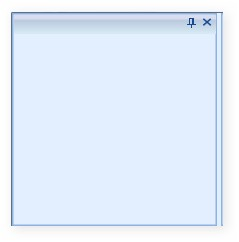
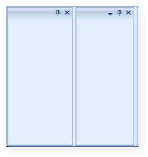
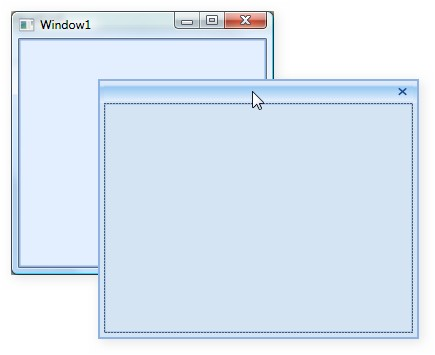
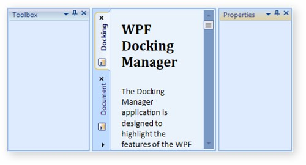
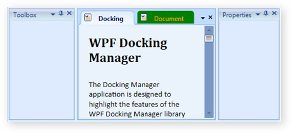

IsContextMenuButtonVisible property is used to control the visibility of the Context Menu Button, which is available when the Header of Docked Window or Float Window is right-clicked. The display of Context Menu can be disabled by setting IsContextMenuVisibile to False.
The following code illustrates the same:
|
[XAML] <syncfusion:DockingManager Name="DockingManager" IsContextMenuVisible="False"> </syncfusion:DockingManager> |
|
[C#] DockingManager.IsContextMenuVisible= "false"; |
The default value is set to True. This property can also be applied to every child inside the DockingManager as shown below:
|
[XAML] <syncfusion:DockingManager Name= "DockingManager"> <Grid Name="grid1" syncfusion:DockingManager.IsContextMenuVisible="False"> <Grid> </syncfusion:DockingManager> |
|
[C#] DockingManager.SetIsContextMenuVisible(grid1,false); |
IsContextMenuButtonVisible property is used to control the visibility of the Context Menu Button (available when child Window is in dock state). The display of Context Menu can be disabled by setting IsContextMenuButtonVisible to False.
The following code illustrates the same.
|
[XAML] <syncfusion:DockingManager Name="DockingManager" IsContextMenuButtonVisible="False"> <Grid/> </syncfusion:DockingManager> |
|
[C#] DockingManager.IsContextMenuButton="False"; |
The default value is set to True.

Figure 342: IsContextMenuButtonVisible=”False”
This property can also be applied to every child inside the DockingManager as shown below.
|
[XAML] <syncfusion:DockingManager Name="DockingManager"> <Grid Name="grid1" syncfusion:DockingManager.IsContextMenuButtonVisible="False"> <Grid> </syncfusion:DockingManager> |
|
[C#] DockingManager.SetIsContextMenuButtonVisible(grid1,false); |

Figure 343: IsContextMenuButtonVisible=”True” for Individual Child
3.14.5.2.7.1.1 DesierWidth and DesierHeight in Dock/Float Modes
Height and width of the docking window in the docked state is set by using properties like DesiredWidthInDockedMode and DesiredHeightInDockedMode respectively.
To set the height and width for the DockingManager elements in the docked state, use the following code snippet.
|
[XAML] <!--To set the width and height of the element in Docked Mode--> <Grid Name="Properties" sftools:DockingManager.DesiredWidthInDockedMode="400" sftools:DockingManager.DesiredHeightInDockedMode="400"/ > |
|
[C#] //To set the width of the element in Docked Mode. this.DockingManager.SetDesiredWidthInDockedMode(Properties, 400);
//To set the Height of the element in Docked Mode. this.DockingManager.SetDesiredHeightInDockedMode(Properties, 400); |
The Height and Width of the DockingManager elements in the floating state is set using the DesiredWidthInFloatingMode and DesiredHeightInFloatingMode properties, respectively.
Use the following code to set the above properties.
|
[XAML]
<!--To set the width and height of the element in the Docked Mode--> <Grid Name="Properties" sftools:DockingManager.DesiredWidthInFloatingMode="400" sftools:DockingManager.DesiredHeightInFloatingMode="400"/> |
|
[C#] //To set the width of the element in Floating Mode. this.DockingManager.SetDesiredWidthInFloatingMode(Properties, 300);
//To set the Height of the element in Floating Mode. this.DockingManager.SetDesiredHeightInFloatingMode(Properties, 200); |
3.14.5.2.7.1.2 Hot Tracking the Dock Window
The docking elements can be highlighted when the mouse is hovered over a Docking window. This feature is enabled using the IsEnableHotTracking property.
To enable / disable hot tracking feature in DockingManager, use the following code.
|
[XAML] <!-- To enable HotTracking in Docking Manager --> <sftools:DockingManager Name="DocManager1" IsEnableHotTracking="True"/>
<!-- To disable HotTracking in Docking Manager --> <sftools:DockingManager Name="DocManager1" IsEnableHotTracking="False"/> |
|
[C#]
//To Enable HotTracking in Docking Manager. this.DockingManager.IsEnableHotTracking = true;
//To Disable HotTracking in Docking Manager. this.DockingManager.IsEnableHotTracking = false; |
3.14.5.2.7.1.3 Using SizetoContentInFloat
The Float window can be resized to its child size by setting the sizeToContentInFloat property to True. The Float window will be resized to its child size when dragged from Dock to Float state.

Figure 344: SizetoContentInFloat=”True”
The following code illustrates the same.
|
[XAML] <syncfusion:DockingManager Name="DockingManager" > <usercontrol1 Name="control1" width=200 height=200 syncfusion:DockingManager. SizeToContentInFloat="true" /> </syncfusion:DockingManager> |
|
[C#] DockingManager.SetSizetoContentInFloat(control1,true); |
When user control is dragged out from Dock state the Float window generated will automatically resize itself to the size of the user control. But when user resizes the Float window and changes it to the Dock state again, it converts it back to the Float state. The Float window returns to its previous size.
3.14.5.2.7.1.4 Customizing Document Tab Control and MDI Document
The following three properties allow you to customize the styles of Tab control and MDI document. This feature is integrated with both DockingManager and Document Container.
· DocumentTabControlStyle
· DocumentTabItemStyle
· DocumentMDIHeaderStyle
3.14.5.2.7.1.5 DocumentTabControlStyle
This property allows you to specify the your own customized style for the Tab control in both DockingManager and Document Container. The following code snippet will illustrate this.
|
[XAML] <syncfusion:DockingManager x:Name="DockingManager" ContainerMode="TDI" Height="Auto"> <syncfusion:DockingManager.DocumentTabControlStyle> <Style TargetType="{x:Type syncfusion:TabControlExt}"> <Setter Property="TabStripPlacement" Value="Left"/> <Setter Property="CloseButtonType" Value="Individual"/> <Setter Property="ShowTabItemContextMenu" Value="False"/> </Style> </syncfusion:DockingManager.DocumentTabControlStyle> </syncfusion:DockingManager> |

Figure 345: DocumentTabControlStyle in TDI mode
3.14.5.2.7.1.6 DocumentTabItemStyle
This property allows you to specify your customized style for tab items inside the Tab control in both DockingManager and Document Container. The following code snippet will illustrate this.
|
[XAML] <syncfusion:DockingManager x:Name="DockingManager" ContainerMode="TDI" Height="Auto"> <syncfusion:DockingManager.DocumentTabItemStyle> <Style TargetType="{x:Type syncfusion:TabItemExt}"> <Setter Property="Background" Value="Green" /> </Style> </syncfusion:DockingManager.DocumentTabItemStyle> </syncfusion:DockingManager> |

Figure 346: DocumentTabItemStyle in TDI mode
3.14.5.2.7.1.7 DocumentMDIHeaderStyle
This property is used to specify the customized style for the MDI window header, in both DockingManager and Document Container. The following code snippet will illustrate this.
|
[XAML] <syncfusion:DockingManager x:Name="DockingManager" ContainerMode="MDI" Height="Auto"> <syncfusion:DockingManager.DocumentMDIHeaderStyle> <Style TargetType="{x:Type syncfusion:DocumentHeader}"> <Setter Property="Foreground" Value="Orange"/> <Setter Property="Background" Value="Green"/> <Setter Property="Height" Value="50"/> <Setter Property="Header" Value="Document"/> </Style> </syncfusion:DockingManager.DocumentMDIHeaderStyle> </syncfusion:DockingManager> |
Figure 347: DocumentMDIHeaderStyle in MDI mode